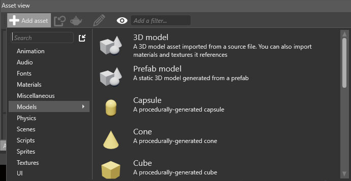
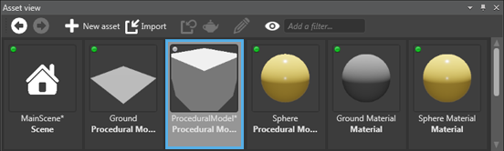
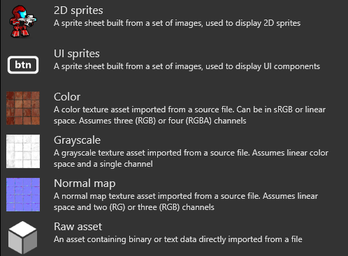

アセットの作成
初級
アセットを作成するには 2 つの方法があります。
*［Add asset］ボタンを使用します (［Asset view］)
- リソース ファイル (画像ファイルやオーディオ ファイルなど) を［Asset view］タブにドラッグ アンド ドロップします
##［Add Asset］ボタンを使用する
［Asset view］で
 をクリックします。
をクリックします。作成するアセットの種類を選択します。

アセット テンプレートの一覧が表示されます。これらは、特定の用途のために構成されているアセットです。
アセットに適したテンプレートを選択します。
アセットが［Asset view］に追加されます。

Note
テクスチャなどの一部のアセットにはリソース ファイルが必要です。そのようなアセットを追加すると、リソース ファイルの指定を求められます。
リソース ファイルをドラッグ アンド ドロップする
互換性のあるリソース ファイルを Game Studio に直接ドラッグし、リソース ファイルからアセットを作成できます。Game Studio は、よく使用されるファイル形式と互換性があります。
Note
- リソース ファイルを使用しないアセット (プレハブ、マテリアル、シーンなど) は、この方法では作成できません。
| アセットの種類 | 互換性のあるリソース ファイル形式 |
|---|---|
| モデル、アニメーション、スケルトン | .dae、.3ds、.obj、.blend、.x、.md2、.md3、.dxf、.fbx |
| スプライト、テクスチャ、スカイボックス | .dds、.jpg、.jpeg、.png、.gif、.bmp、.tga、.psd、.tif、.tiff |
| オーディオ | .wav、.mp3、.ogg、.aac、.aiff、.flac、.m4a、.wma、.mpc |
リソース ファイルをドラッグ アンド ドロップしてアセットを作成するには:
(オプション) 使用するリソース ファイルがプロジェクトの［Resources］フォルダーにまだない場合は、ファイルをフォルダーに移動します。必須の操作ではありませんが、リソース ファイルを整理し、プロジェクトを共有しやすくするため、移動することをお勧めします。詳細については、「プロジェクトの構造」を参照してください。
エクスプローラーから［Asset view］にリソース ファイルをドラッグします。

作成するアセットの種類を選択します。

アセットが［Asset view］に追加されます。

リソース ファイルのすべての依存関係が自動的にインポートされて、対応するアセットが作成されます。たとえば、モデルまたはアニメーションのリソース ファイルを追加すると、Game Studio が他のすべての処理を行います。
Tip
複数のファイルを同時にドラッグできます。異なる種類の複数のファイルを同時にドロップすると、選択されたテンプレートと一致するファイルだけが追加されます。たとえば、画像ファイルとサウンド ファイルを追加した後、Sound アセット テンプレートを選択すると、サウンド ファイルだけが追加されます。